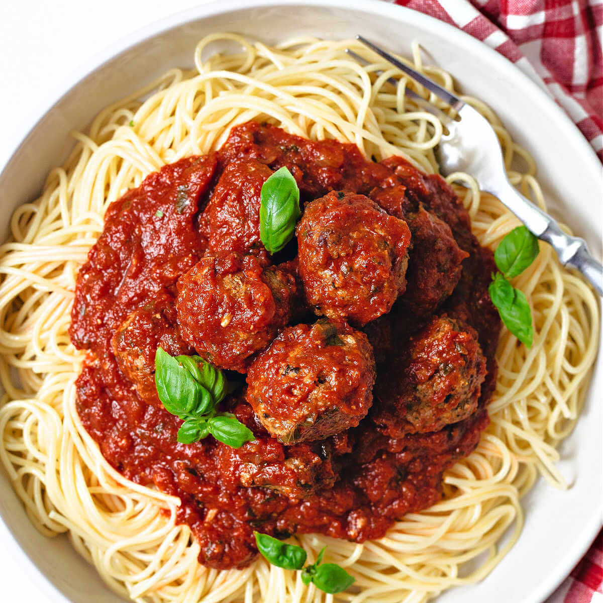

Spaghetti and Meatballs

Easy weeknight friendly spaghetti and meat sauce that's made completely from scratch. Use ground beef, turkey, pork, chicken, or lamb to make this simple spaghetti recipe.
You Will Need
- 1 pound lean ground meat like beef, turkey, chicken, or lamb
- 3 tablespoons olive oil
- 1 cup (130 grams) chopped onion
- 3 garlic cloves, minced (1 tablespoon)
- 2 tablespoons tomato paste
- 1/2 tablespoon dried oregano
- Pinch crushed red pepper flakes
- 1 cup water, broth or dry red wine
- 1 (28-ounce) can crushed tomatoes
- Salt and fresh ground black pepper
- Handful fresh basil leaves, plus more for serving
- 12 ounces dried spaghetti or favorite pasta shape
- 1/2 cup shredded parmesan cheese

Now lets make the dish!
- Heat the oil in a large pot over medium-high heat. Add the meat and cook until browned, about 8 minutes. As the meat cooks, use a wooden spoon to break it up into smaller crumbles.
- Add the onions and cook, stirring every once and a while, until softened, about five minutes.
- Stir in the garlic, tomato paste, oregano, and red pepper flakes and cook, stirring continuously for about 1 minute.
- Pour in the water and use a wooden spoon to scrape up any bits of meat or onion stuck to the bottom of the pot. Stir the tomatoes, 3/4 teaspoon of salt, and a generous pinch of black pepepr. Bring the sauce to a low simmer. Cook, uncovered, at a low simmer for 25 minutes. As it cooks, stir and taste the sauce a few times so you can adjust the seasoning accordingly.